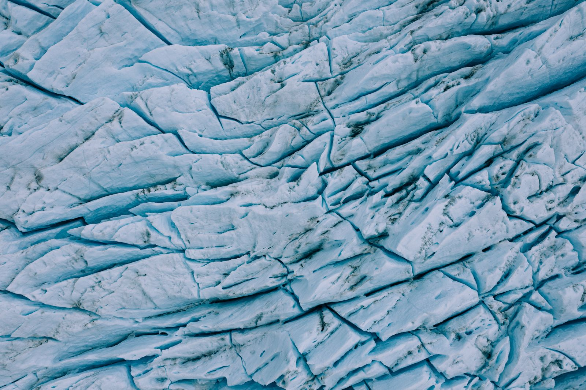

Ninety-six metres of a planned hundred and twenty
SITE K-3, West Greenland ice capSEASON May–June 2024TARGET 120 mRECOVERED 96 mSTATUS Dataset deposited

The ask
A three-university consortium needed a 120 m firn core from a high-accumulation West Greenland site: two centuries of sulfate and pollution history, dated tightly enough to line up against emissions records year by year.
What I did
Led the science side of a 32-day season: electromechanical drilling, on-site core logging, and a cold chain that never rose above −20 °C. A storm took 9 of the 32 days. A drill-cable fault at 88 m took two more. On day 30, with the weather window closing, I called the hole at 96 m rather than gamble the recovered core — and the team — on the last 24.
The outcome
The 96 m came home intact and dated, 2024 back to 1811, anchored on the Tambora and 1809 sulfate horizons. The study's two-century window was met; the descoped bottom 24 m would only have duplicated a neighbouring published core, and the consortium accepted a splice plan instead of a second season. Reported to the funder as 96 of 120 m — because that is what happened.